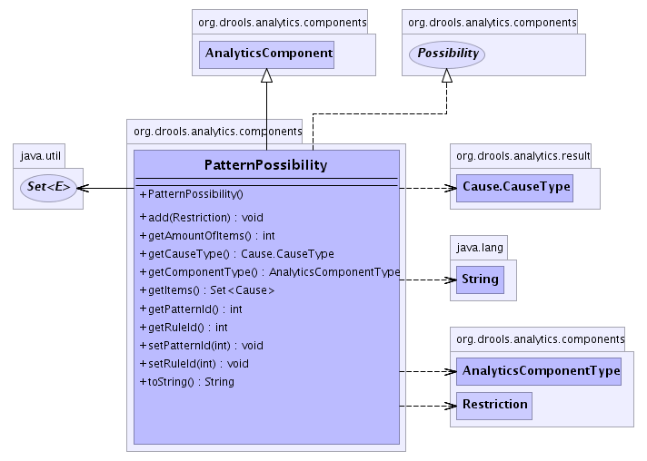

org.drools.analytics.components
Class PatternPossibility
java.lang.Object
 org.drools.analytics.components.AnalyticsComponent
org.drools.analytics.components.PatternPossibility
org.drools.analytics.components.AnalyticsComponent
org.drools.analytics.components.PatternPossibility
- All Implemented Interfaces:
- Possibility, Cause
public class PatternPossibility
- extends AnalyticsComponent
- implements Possibility
Instance of this class represents a possible combination of Constraints under
one Pattern. Each possibility returns true if all the Constraints in the
combination are true.
-
- 
| Nested classes/interfaces inherited from interface org.drools.analytics.result.Cause |
Cause.CauseType |
| Methods inherited from class java.lang.Object |
clone, equals, finalize, getClass, hashCode, notify, notifyAll, wait, wait, wait |
PatternPossibility
public PatternPossibility()
getComponentType
public AnalyticsComponentType getComponentType()
- Specified by:
getComponentType in class AnalyticsComponent
getCauseType
public Cause.CauseType getCauseType()
- Specified by:
getCauseType in interface Cause
getItems
public java.util.Set<Cause> getItems()
- Specified by:
getItems in interface Possibility
getAmountOfItems
public int getAmountOfItems()
- Specified by:
getAmountOfItems in interface Possibility
getPatternId
public int getPatternId()
getRuleId
public int getRuleId()
setRuleId
public void setRuleId(int ruleId)
setPatternId
public void setPatternId(int patternId)
add
public void add(Restriction restriction)
toString
public java.lang.String toString()
- Overrides:
toString in class java.lang.Object